AT-6
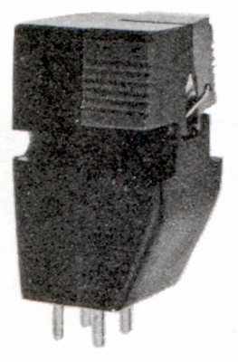
■価格 （他社供給用）
■発電方式 MM型
■出力電圧 5mV±0.5dB(1kHz
5cm/sec)
■針圧 3.0g以下
■再生周波数帯域 20-21,000Hz±3dB
■チャンネルセパレーション -25dB/1kHz
-20dB/10kHz
■チャンネルバランス
■コンプライアンス 5×10-6cm/dyne
■負荷抵抗
■直流抵抗 550Ω
■インピーダンス 2.5kΩ/1kHz
■針先 0.7mil
■自重 9.5g
■交換針
■発売
■販売終了
■備考 1960年代のステレオレコード初期に、オーディオメーカーに供給されたカートリッジ。
スペック的にはAT-3に近いが、やや劣る部分もあるようだ。
単品のカートリッジでだけでなく、アームに装着した形でも他社へ供給されていた。テクニカでの型番は「P」。
P-1102
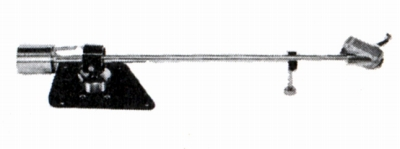
■型式 ダイナミック型
■軸受 サファイヤ
■針圧 2.5g
■実行長 230�o
P-1105
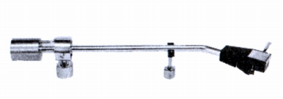
■型式 ダイナミック型
■軸受 サファイヤ
■針圧 2.5g
■実行長 215�o
P-1106
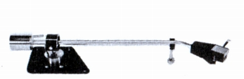
■型式 ダイナミック型
■軸受 サファイヤ
■針圧 2.5g
■実行長 230�o
P-1201
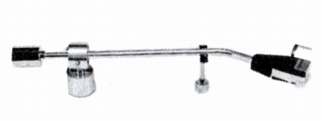
■型式 スタティックバランス型
■軸受 サファイヤ
■針圧 2.5g
■実行長 200�o
P-1302
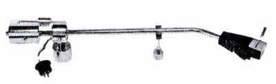
■型式 スタティックバランス型
■軸受 サファイヤ
■針圧 2.0g
■実行長 225�o
■ラテラルバランサー あり
P-1401
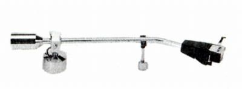
■型式 スタティックバランス型
■軸受 サファイヤ
■針圧 2.5g
■実行長 200�o
P-1402
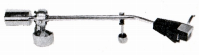
■型式 スタティックバランス型
■軸受 サファイヤ
■針圧 2.5g
■実行長 198�o
P-1601
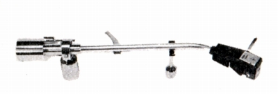
■型式 スタティックバランス型
■軸受 サファイヤ
■針圧 2.0g
■実行長 205�o
■ラテラルバランサー あり
■アンチスケートディバイス あり
P-1701
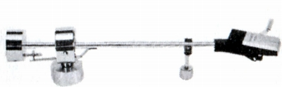
■型式 ダイナミック型
■軸受 ボールベアリング
■針圧 2.0g
■実行長 195�o
P-1801
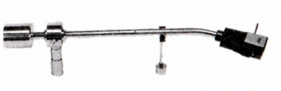
■型式 スタティックバランス型
■軸受 ボールベアリング
■針圧 2.5g
■実行長 215�o
P-1802
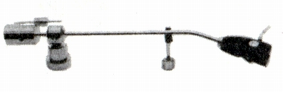
■型式 スタティックバランス型
■軸受 ボールベアリング
■針圧 2.5g
■実行長 245�o